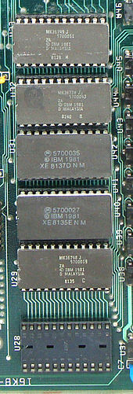

Las memorias de solo lectura una vez que han sido escritas o programadas solo se puede leer el contenido de las celdas, se suelen utilizar para almacenar el código que permite arrancar a los sistemas; estas se fabrican para aplicaciones masivas con máscaras de silicio. Hay 3 tips de memorias ROM que pueden ser programadas en el laboratorio, algunas pueden ser borradas. · Memoria PROM: son memorias ROM programables eléctricamente mediante un programador especial que genera picos de alta tensión, que funden físicamente unos fusibles grabando en el dispositivo de forma permanente. Tienen el inconveniente que no pueden ser borradas y para su lectura requieren una tarjeta especial.
Memoria EPROM:
se programan también con un dispositivo de programación conectado al ordenador la diferencia con la PROM es que estas si se pueden borrar; se realiza mediante rayos UV, para que suceda esto las EPROM tienen una ventana de cuarzo pequeña transparente en la cual se hace la exposición de la matriz de celdas como se muestra en la figura 1.6. Una vez programadas se tiene que etiquetar esta ventana para evitar que sea borrada accidentalmente.!
Memoria EEPROM:
son memorias programables y borrables mediante un dispositivo especial que se conectara al ordenador.
